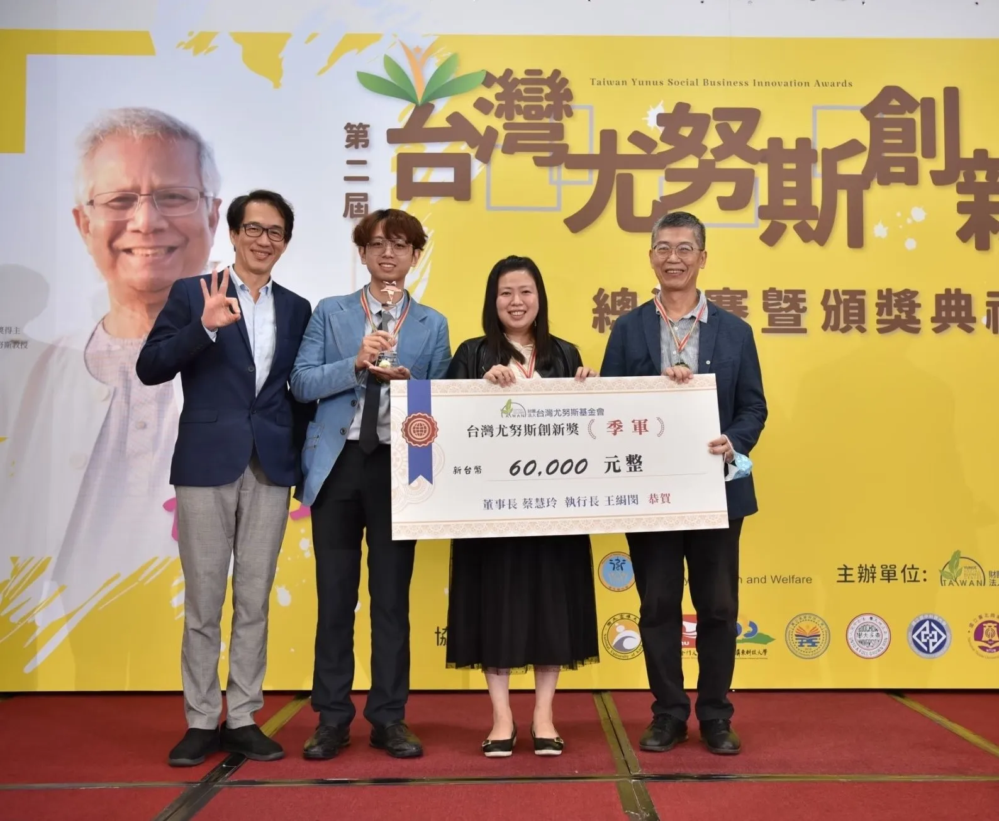

新聞發布 | 2020.10.19
m'AI Touch團隊在200多個投件隊伍中脫穎而出，贏得社會組第三名。
台灣尤努斯創新獎係由鴻海集團創辦人郭台銘於2019年尤努斯東亞年會中允諾支持台灣尤努斯基金會推動社會創新創業社會型企業所規劃辦理。時逢台灣疫情高峰期，仍有超過100組學生組、社會組參賽團隊熱烈報名、共襄盛舉，希望透過社會企業創業的方式解決台灣當今社會所面臨的社會議題。
在社會組的評選中，除了評估商業模式以及創新性外，更是將符合聯合國永續目標以及符合社會型企業納入重要評分中。因此，能在此次競賽獲選支隊伍皆有其社會影響力在其中。此外，這次競賽評審更是邀請到前行政院毛治國院長、尤努斯基金會董事長蔡慧玲、金門大學王金國副教授以及尤努斯基金會執行長王絹閔。